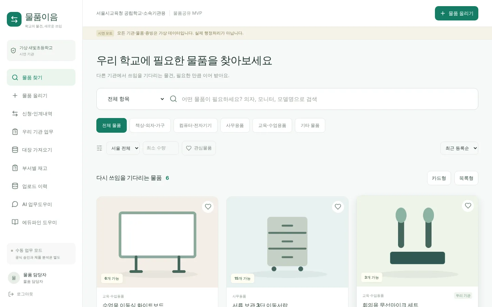
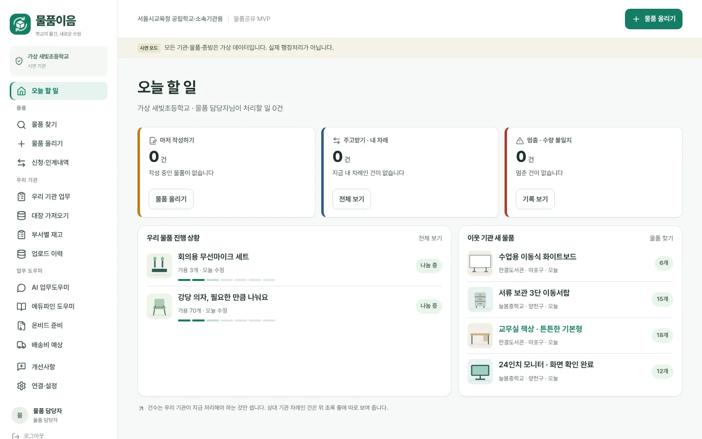

초안 · 의견 받으려고 만든 페이지예요
물품이음 디자인 시안, 직접 둘러보세요
아래 화면을 그대로 눌러 볼 수 있어요. 시연 계정을 골라 들어가면 돼요. 그 아래 설명은 1분이면 읽어요.
추천 순서: 김새빛으로 들어가기 → 홈 「오늘 할 일」 → 물품 찾기 → 물건 하나 눌러 받기 신청 → 「＋ 올리기」
글자만 보면 판단하고, 사진을 보면 갖고 싶어져요
에듀파인 소요조회 목록 (예시)
표 한 줄 (예시 화면, 실제 에듀파인 화면 아님)
| 품명 | 규격 | 수량 | 취득단가 |
|---|---|---|---|
| 화이트보드 | 1200×900 | 6 | 180,000 |
| 서류함 | 3단 | 15 | 95,000 |
| 모니터 | 24인치 | 12 | 210,000 |
| 독서대 | 원목 | 20 | 12,000 |
받는 학교는 이렇게 생각해요. 「상태가 어떻지? 바퀴는 있나? 직접 가서 봐야 하나?」 → 글자만으로는 확인할 게 많아요.
시안: 물품이음

사진 카드
「어, 우리 3학년 교실에 딱인데?」 → 사진에 상태·수량·거리가 같이 보여서 바로 신청해요.
당근마켓과 같은 원리
사람은 글자 목록보다 사진을 보고 「갖고 싶다」를 느껴요. 신청이 늘어야 버려지는 물건이 줄어요.
헛걸음이 줄어요
사용감, 크기, 부속품을 사진으로 미리 보면 「가 보니 못 쓰겠네」가 줄어요.
공식 절차는 그대로
불용결정·대장 정리는 에듀파인에서 해요. 물품이음은 그 사이 「찾고 고르는 것」을 쉽게 해요.
시안은 최종 모습, 실제 사이트에는 두 번에 나눠 넣어요
1단계 · 준비 끝지금 바로 넣을 수 있는 것
「오늘 할 일」 홈 · 진행 7단계 막대 · 메뉴 3묶음 · 글꼴과 로고
실제 사이트(v0.9) 코드에 입혀 두었어요2단계 · 의견 받고시안처럼 더 바꾸는 것
위쪽 메뉴 4개 · 사진 크게 · 올리기 5단계 · 우리 기관 보드
팀 의견을 듣고 만들게요

실제 사이트를 바꾼 게 아니라 코드를 복사해서 제 저장소에서만 입혀 본 거예요. 엑셀·OZD 올리기, 조달청 보완, AI 대화창, 서버 규칙은 그대로예요.
개발·배포 담당자용 (펼치기)
- 기준:
codex/v09-nas-completion7c0a69a - 변경 내용: feelover7-ui/trade-redesign PR 4
- 팀 저장소로 반영 요청: 비교 화면에서 Create pull request
- 테스트: npm test 150개·build 통과, e2e v0.7·OZD·RAG 12개 통과. feedback·lifecycle 2개 실패는 수정 전 v0.9에서도 같음(헤드리스 브라우저가 한글 다운로드 파일명을 download로 받음)
이것만 알려 주세요
- 사진 먼저 보여 주는 방향, 실제 담당자에게 맞을까요?
- 시안에서 「이건 현실과 다르다」 싶은 곳이 있나요?
- 1단계, 실제 사이트에 넣어도 괜찮을까요? (시연이 실제 사이트라 11/11 전에 들어가면 좋아요)
업무매뉴얼과 사례집을 바탕으로 만든 초안이에요. 그림은 사진이 들어갈 자리이고, 기관·물건은 모두 가상이에요.
시안 다시 둘러보기맨 위에서 바로 눌러 볼 수 있어요
위로 ↑